Introdução ao Kubernetes
Live 02 · Containers e Kubernetes
Prof. Afonso Cesar Lelis Brandão · Aula 03 · 24/07 · 19h

Afonso Cesar Lelis Brandão
Professor · Engenharia de Software & IA
Engenheiro de software com experiência em infraestrutura cloud, containers e DevOps. Apaixonado por transformar teoria em prática e por ajudar profissionais a dominarem as ferramentas que movem a indústria.
Nesta aula mergulhamos no Kubernetes — o orquestrador que faz a diferença entre um projeto local e um produto em produção de verdade.
O que veremos hoje
Aula 03 — Introdução ao Kubernetes
- Quando o compose não basta
- O que é o Kubernetes
- Arquitetura: control plane e nodes
- Pod: a menor unidade
- Deployment: estado desejado
- Service: rede estável
- Mão na massa: primeiro deploy
Conteúdo
Quando o compose não basta
O compose é ótimo numa máquina. Mas e na produção real?
- Dezenas de containers espalhados em várias máquinas.
- Se um container cai às 3h da manhã, quem o reinicia?
- Como escalar na Black Friday e reduzir depois, sem downtime?
Conteúdo
O que é o Kubernetes (K8s)
Orquestrador de containers open-source, criado no Google e mantido pela CNCF. Seu princípio é declarativo:
- Você descreve o estado desejado ("quero 3 réplicas deste app").
- O Kubernetes reconcilia a realidade com esse desejo, o tempo todo.
- Caiu uma réplica? Ele sobe outra. Pediu mais? Ele cria. Self-healing por padrão.
Conteúdo
Arquitetura: control plane e nodes
Control plane (o cérebro)
API Server (porta de entrada), Scheduler (escolhe onde rodar), Controller Manager (reconcilia) e etcd (a memória do cluster).
Worker nodes (os músculos)
Máquinas que rodam os Pods. Cada uma tem kubelet (agente), kube-proxy (rede) e um container runtime.
Você fala com o API Server (via kubectl); o resto acontece sozinho.
Conteúdo
Pod: a menor unidade
O Kubernetes não roda containers diretamente — ele roda Pods:
- Um Pod é um envelope com um ou mais containers que compartilham rede e armazenamento.
- Containers de um Pod conversam por localhost.
- Pods são efêmeros e descartáveis: nascem e morrem o tempo todo — por isso não os criamos soltos.
Mão na massa
Deployment: o estado desejado
apiVersion: apps/v1
kind: Deployment
metadata:
name: web
spec:
replicas: 3 # quero 3 réplicas, sempre
selector:
matchLabels:
app: web
template:
metadata:
labels:
app: web
spec:
containers:
- name: web
image: nginx:1.27
ports:
- containerPort: 80Mão na massa
Service: um endereço estável
Os Pods mudam de IP a cada recriação. O Service dá um nome e IP fixos para o conjunto.
apiVersion: v1
kind: Service
metadata:
name: web
spec:
selector:
app: web # mira todo Pod com label app=web
ports:
- port: 80
targetPort: 80
type: ClusterIP # acessível dentro do clusterMão na massa
Primeiro deploy com kubectl
$ minikube start # cluster local
$ kubectl apply -f deployment.yaml # cria o estado desejado
$ kubectl get pods # -> 3 Pods Running
$ kubectl apply -f service.yaml
$ kubectl scale deploy/web --replicas=5 # escala para 5Apague um Pod com kubectl delete pod e veja o Kubernetes recriá-lo na hora.
Comparação — Docker vs Kubernetes
docker run vs kubectl apply
| Ação | Docker | Kubernetes |
|---|---|---|
| Rodar um app | docker run -p 80:80 nginx | kubectl apply -f deployment.yaml |
| Ver o que roda | docker ps | kubectl get pods |
| Escalar | docker compose scale api=3 | kubectl scale deploy/web --replicas=3 |
| Ver logs | docker logs <id> | kubectl logs deploy/web |
| Remover | docker rm -f <id> | kubectl delete deploy/web |
| Acesso externo | -p 80:80 | kubectl expose / Service + Ingress |
"Kubernetes é uma plataforma para construir plataformas. É um ótimo ponto de partida — não o destino final."— Kelsey Hightower
Pontos-chave
O que fixar desta aula
Declarativo
Você descreve o estado desejado; o K8s reconcilia e se auto-recupera.
Control plane + nodes
O cérebro decide; os nodes executam os Pods.
Pod e Deployment
O Pod é a menor unidade; o Deployment garante quantos Pods devem existir.
Service
Dá nome e IP estáveis a Pods que vão e voltam.
Atividade prática
Mão na massa: primeiro deploy no K8s
Vamos fazer o primeiro deploy num cluster local (minikube ou kind):
- Escreva um Deployment com 3 réplicas de um app (nginx serve).
- Exponha com um Service e acesse pelo navegador.
- Escale para 5 réplicas e observe os novos Pods subindo.
- Desafio: delete um Pod manualmente e cronometre o self-healing.
Até a próxima!
Você fez seu primeiro deploy no Kubernetes e entende Pods, Deployments e Services. Na última aula, fechamos com escala automática, configuração, segredos, Ingress e um deploy ponta a ponta.
Próxima aula: Aula 04 · Kubernetes na prática & deploy completo · 31/07
Prof. Afonso Cesar Lelis Brandão